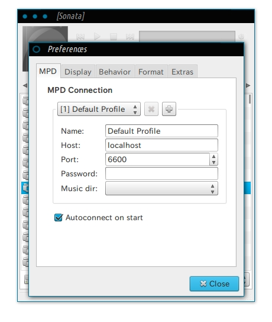

Ubuntuでmpdを利用する際にいくつか詰まるところがあったのでメモします． 運用方法は，Ubuntu起動時にユーザ設定を読み込んでmpdを立ち上げておき，同Ubuntuのsonataで聞く，もしくはローカルネットワークにあるデバイスで聞く，という方法です．
まずはなによりインストール
$ sudo apt-get install mpd sonata必要ならばmpcも合わせてインストールしておきます．
~/.mpdconfを以下の例のように設定．
port "6600"
music_directory "~/Music/"
playlist_directory "~/.mpd/playlists"
db_file "~/.mpd/mpd.db"
log_file "~/.mpd/mpd.log"
audio_output {
type "pulse"
name "MPD"
}audio_outputはメディアサーバとして運用するなど特定の条件下で無い限り，pulseを選択するほうが良いです．
mpdを起動，そしてエラーメッセージ
$ mpd
Failed to bind to '[::]:6600': Address already in use多くの場合このエラーメッセージが表示されます．（出ない場合でも再起動後に遭遇するかもしれません．）
検索するとこのエラーの解決法について多くのスレッドが見つかりますが，詰まる人が多い理由は以下２つが原因と考えられます．
- エラーメッセージの通りに起動自体に失敗しているのか，設定の読み込みに失敗しているだけなのかわかりにくい．
- mpdの起動に成功しても（別のことが原因で）似たようなエラーメッセージが表示される．
...要するに紛らわしいという話です．
まずはsonataでmpdをちゃんと起動できているか確認する
sonataを起動し，コンテクストメニューからPreference画面を開いて以下のように設定します．

Portは~/.mpdconfで指定したものと同じ値を入力します．また，外部のデバイスから聞く場合はHostをmpdを走らせているマシンのローカルIPアドレスを指定する必要があります．
ユーザ設定がきちんと読み込まれていればmpd起動の瞬間に，sonataのLibraryタブに~/.mpdconfで指定したフォルダ内の音楽ファイルが表示されます．
/etc/init.d/mpdがデーモンとして起動時に実行される
mpdをインストールすると/etc/init.d/mpdが作成されて，起動時にスーパーユーザが
デーモンとしてmpdを実行しています．そしてこのときユーザ設定（~/.mpdconf）ではなく管理者設定（/etc/mpd.conf）のみが読み込まれるため，このままではsonataを起動してもLibraryタブに先ほど指定した音楽ファイルが表示されません．
このときは以下を実行してユーザ権限でmpdを再起動させます．
$ sudo service mpd stop
# もしくは $ sudo /etc/init.d/mpd stop
$ mpd
listen: bind to '0.0.0.0:6600' failed: Address already in use (continuing anyway, because binding to '[::]:6600' succeeded)さきほどと似たようなエラーメッセージが出てはいますが，sonataを起動してLibraryタブに指定した音楽フォルダの中身が反映されている場合，mpdは無事起動しています．
このエラーメッセージは，ipv6でのバインドを試行して失敗したこと原因のようです．その後にIPv4でバインドに成功しているため問題はありませんが，このメッセージを消したい場合，
~/.mpdconfに以下の設定を加えてIPv4でのバインドを指定してやります． https://wiki.archlinux.org/index.php/Music_Player_Daemon/Troubleshootingbind_to_address "127.0.0.1"
起動時にスーパーユーザがmpdを起動させないようにする
起動時にmpdをユーザ設定を読み込んだ上で起動するためには，まずスーパーユーザがmpdを起動させないようにする必要があります．これは/etc/mpd.confにユーザ設定を直接書いてしまったり，/etc/init.d/mpdをリネームもしくは削除してしまうことで実現できてしまいますが，あまり望ましい方法ではありません．
/etc/init.dに登録されながらも自動起動をオフするには以下のようにします
sudo update-rc.d mpd disableオンにしたい場合はdisableをenableに変えて実行します．
これで自動起動がオフにできたら，DashメニューからStartupApplicationにmpdコマンドを追加することで，ログイン時にユーザ設定を読み込んだ状態でmpdを起動してくれます．